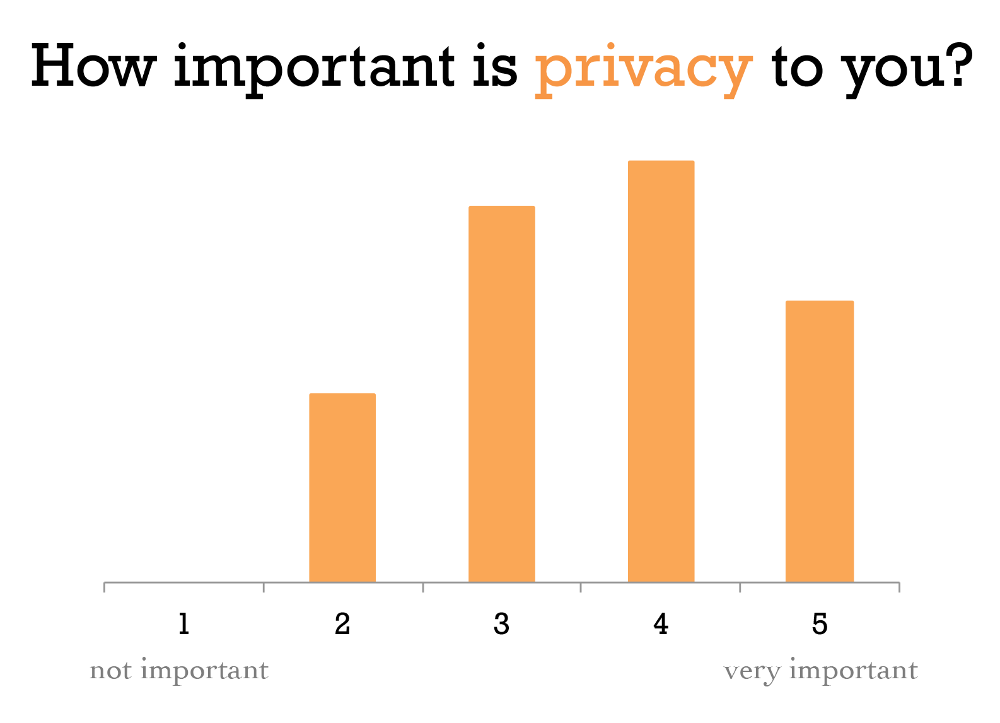
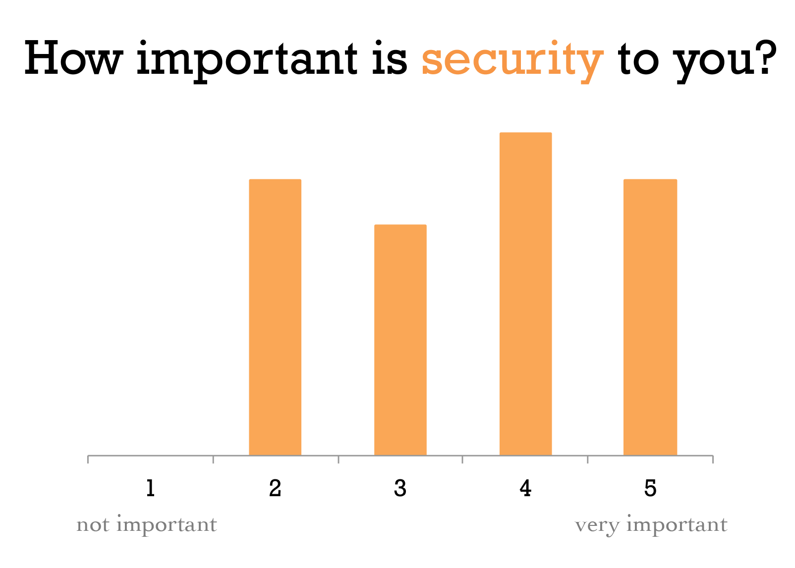

Welcome our site
This website is the culmination of our work in CS181, Stanford's class on Computers, Ethics, and Public Policy. Our research was inspired by a 2002 study by Stanford students that pointed out privacy policy weaknesses and concerns on campus. Because the web has changed so much over the past decade, we decided to bring the original study up to date.
A study of student privacy issues
by The Stanford Student Computer and Network Privacy Project (2002)An interesting finding of the 2002 study was that Stanford students were overwhelming uninformed about their privacy rights. Major portions of the study focused on recommendations for increasing student, particularly undergrad, awareness on campus. Throughout the project, we framed our research in a way that students could quickly digest the information. While a key goal was to keep our content very accessible, we also provide links to further information for those more interested in the specifics.
State & Federal Laws
In an interview with David Behinfar, Director of Privacy at Stanford, we learned that privacy is approached very differently in America than in Europe. He said that privacy is effectively a constitutional right in Europe, while in America we have a system of "privacy by design". Instead of inherent privacy rights, it is defined only where we can find a state or federal statute. Instead of a broad, overarching principle applying to all individuals, we have a patchwork system of laws that apply to specific groups in specific circumstances. With this analysis in mind, it is easy to see why there is so little awareness of privacy policies among Stanford students and beyond.
Listen to the full interview with Stanford's Director of Privacy David Behinfar. |
+ Family Educational Rights & Privacy Act (FERPA)
FERPA was signed into US federal law by President Gerald Ford in 1974. It applies to educational institutions that receive funding from the Department of Education. The law gives parents access to their children's records, an opportunity to have records amended, and some control of information from the records. After a student is 18 years old, schools must get receive the student's consent prior to disclosure of his or her education records.
The University Registrar's site provides a notification of Stanford students' rights afforded under Ferpa. These include:
| The right to consent to disclosures of personally identifiable information contained in the student's education records, except to the extent that FERPA authorizes disclosure without consent. | The right to file a complaint with the U.S. Department of Education concerning alleged failures by the University to comply with the requirements of FERPA. |
| The right to request the amendment of the student's education records that the student believes are inaccurate, misleading, or otherwise in violation of the student's privacy rights under FERPA. | The right to inspect and review the student's education records within 45 days of the date the University receives a request for access. |
For more information, refer to the Registrar's webpage.
+ Health Insurance Portability & Accountability Act (HIPAA)
This law was passed in 1996 to protect information associated with an individual's medical records and history. Its main provisions are set out in two rules: the "Privacy Rule" and the "Security Rule".
Since Stanford operates medical institutions and provides medical services, it must comply with the expectations set out by HIPAA.
Privacy Rule: limits Stanford University's use and disclosure of information that could potentially associate an individual's identity with his/her health information
Security Rule: requires Stanford University to implement administrative, technical, and physical safeguards to ensure the confidentiality, integrity and availability of PHI (Personal Health Information) maintained in an electronic form ("ePHI") and to protect ePHI against any reasonably anticipated threats or hazards, unauthorized uses or disclosures.
+ Gramm-Leach-Bliley Act
The Gramm-Leach-Bliley Act requires financial institutions to explain their information-sharing practices to their customers and to safeguard sensitive data. The term "financial institutions" spans all establishments that offer consumers financial products or services like loans, financial or investment advice, or insurance.
+ Electronic Communication Privacy Act (ECPA)
The ECPA is a federal law enacted in 1986 that extends government restrictions on wire taps from telephone calls to include transmissions of electronic data by computers.
Stanford's Policy
Public Directory Information
Any school, company, district, or entity that maintains records about its students, employees, or associated personels are required to disclose the type of information that an entity considers directory information. Directory information is publically accessible information about an entity's people. Below, you can find the directory information of Stanford and UC Berkeley.
Stanford | UC Berkeley |
|---|---|
Name Specific quarters of registration Prior institutions/schools Major(s), minor(s), and field(s) Degree(s) & honors Weight & height (for athletic teams) Participation in officially activities Email addresses Theses & dissertations ID card photographs |
Name Dates of attendance Prior institutions/schools Major(s), minor(s), field(s) Degree(s) and honor(s) Weight & height (athletes) Participation in official activities Addresses (local/permanent/email) Telephone numbers Date and place of birth Class level Units enrolled |
This chart indicates that UC Berkeley discloses slightly more information about its students than Stanford. These difference are not related to the fact that these are private and public schools; different schools simply have different policies as decided by the administrators.
Go to the Registrar's website to learn more about the default privacy settings to student information upon admission to the university. However, students with an active SUNETID can change their privacy settings in access.
Stanford's Residential Privacy Policy
Stanford's Residential Privacy Policy states that Academic Computing Services (ACS) collects contact information, including on-campus residence, phone number, email address, and name. The policy states that personally identifiable information is used exclusively to announce security updates and network outages. It also says that ACS will not share personally identifiable information outside of the University unless compelled by court order, subpoena, or emergency circumstances.
Recently, Stanford's VP for Business Affairs Randy Livingston sent a letter to the University community that outlined new security mandates. These requirements included the installation of BigFix, a program that allows Stanford IT Services to install security patches, to collect information about the computer, and to remotely configure power settings. Among several other requirements, the letter also mandated that all systems must use a University-managed file backup service.
Soon after the requirements were released, a group of grad students and faculty expressed concerns about the impact of the mandate on individual privacy and research productivity. In particular, they were anxious about giving IT Services administrator privileges through BigFix and the about the file backup service, which would give the University access to files long-deleted by the device's owner. Livingston responded with a second letter, suspending the key elements of the mandate for six months while a committee undertakes the mandate's review.
Data Classification at Stanford
Stanford classifies information under four categories: unrestrictedInformation is classified as Unrestricted if it is not considered to be Prohibited, Restricted, or Confidential., confidentialInformation is classified as Confidential if (i) it is not considered to be Prohibited or Restricted and is not generally available to the public, or (ii) it is listed as Confidential in the "Classification of Common Data Elements"., restrictedInformation is classified as Restricted if (i) it would otherwise qualify as "Prohibited" but it has been determined by the DGB that prohibiting information storage on Computing Equipment would significantly reducefaculty/staff/student effectiveness when acting in support of Stanford's mission and/or (ii) it is listed as Restricted in the "Classification of Common Data Elements" below., and prohibitedInformation is classified as Prohibited if protection of the information is required by law/regulation or Stanford is required to self-report to the government and/or provide notice to the individual if information is inappropriately accessed..
Student Awareness
In order to probe the state of student awareness concerning their privacy rights at Stanford, we conducted a short survey targeting current Stanford undergraduates. From the results of this survey, it appears that Stanford students overall are not very aware of what privacy rights and protections they are guaranteed by both University policy and federal law. Some key results were:
|  | First, we asked respondents how important the issues of privacy and security were to them. The general results were that students care a lot about their privacy and security. |
| We then decided to ask the same study participants about their knowledge of their privacy rights. |  |

|
Only a quarter of respondents had heard of FERPA, the privacy law most relevant to students. Furthermore, those who recognized the acronym were unclear on what the law actually mandates; in response to the question, one student said, "Nope... I just know I signed it in high school or something haha". |
|
We also asked students whether or not they believed their parents could access their grades without their permission. The law mandates that parents may only have drirect access to their child's grades if the child is a tax-dependent. Because most undergraduates are tax-dependent, the majority of Stanford students' parents can see their grades; meanwhile, three-quarters of the respondents said they do not believe their parents have access. |
Moral Frameworks
Privacy laws and policies are created to help protect individuals on information about them. There are many perspectives that privacy policies can be viewed from that can justify or question the necessity of privacy laws and policies such as FERPA, HIPAA, and many more. In relevance with our studies, we will analyze privacy policies from utilitarian and deontological perspectives.
From a utilitarian perspective, many may argue that privacy policies help to foster and create an environment of trust that allow individuals and the community to freely develop ideas and live in comfort. Granting individual privacy rights can ensure that they feel safe from judgement and thus free to develop ideas that could consequently result in greater good and happiness for both the individual and community. In regards to academic privacy, it is imperative that students not feel pressured that their academic performance be made public. This reassurance benefits students by reducing stress and fear of judgement, creating a better academic environment that fosters honesty and integrity; ultimately benefitting the individual and student body. Although some may argue that privacy is the best interest of the community, a different utilitarian argument may claim that privacy allows for, sometimes crucial, information to be hidden from the public. For example, we can consider the case in which a patient is receiving a life-threatening operation. It would be in ultimate interest of the patient to choose a surgeon who was academically proficient over one who barely passed medical school. While privacy policies may provide individuals reassurance, it may sometimes hide information that would be more beneficial to be public than private.
From a deontological perspective, it is easy to argue that privacy is simply an inherent human right. Privacy pertains to the actions, information, affairs, reputation, and aspects of an individual. Thus we can argue deontologically that privacy policies are in the duty of enforcing something that belongs to the rights of an individual. In terms of academic privacy, the right to whether parents or legal guardians are allowed to view their child's education records may argued. While a student's academic records certain reflect the properties of a student, we can argue that if a parent is paying for their child's tuition, then they have an inherent right to access their child's records. A deontological argument may claim that parents not only should have the right to inspect the status of their investment, but also have the right as a human to know how their child is performing.
| Listen to an interview with Aleecia McDonald, Director of Privacy at The Center for Internet and Society at Stanford. |
Miscellaneous
Here you can find the slides from the presentation we gave to our CS181 class on Friday 6 June and our annotated bibliography for further resources.
+ Presentation Slides
Click to see the slides for our final presentation.+ Annotated Bibliography
Click to see our annotated bibliography."1.6.1 Privacy Policy." Administrative Guide. Stanford University, n.d. Web. 26 May 2014. https://adminguide.stanford.edu/chapter-1/subchapter-6/policy-1-6-1>.
Stanfords Privacy Policy documentation on the Administrative Guide section of the official website provides an overview and outline of what Stanfords obligations are in regards to students' privacy. It briefly provides descriptions of the rights students have to their personal information such as academic, health, and financial records, as well as the limitations of how Stanford can use its data. In most cases it appears that Stanford's use, disclosure, storage, or collection of student information is fairly limited, and must strictly comply with Federal and state laws. However, in cases where legal action is necessary, Stanford may be required to disclose information about students and/or faculty.
"Privacy of Student Record/FERPA (GAP 8.2)." Privacy of Student Record/FERPA (GAP 8.2). Stanford University, n.d. Web. 26 May 2014. <http://gap.stanford.edu/8-2.html>.
As an academic institution, Stanford University is required to follow the Family Education Rights and Privacy Act of 1974 (FERPA) that provides regulation for how academic records for a student are allowed to be disclosed or used. FERPA provides students the right to request and review education records from the University, the right to request changes to education records, and the right to file a complaint with the U.S. department of Education. In addition, FERPA also outlines the ways a student's records may be disclosed without the consent of the student. For example, Stanford is allowed to disclose education records to parents or guardians without the consent of the student as long as they are claimed as a dependent under the Internal Revenue Code.
"6.2.1 Computer and Network Usage Policy." Administrative Guide. Stanford University, n.d. Web. 26 May 2014. <https://adminguide.stanford.edu/chapter-6/subchapter-2/policy-6-2-1>.
Stanford faculty, staff, and students rely heavily on network and Internet access throughout the school. In order to comply with both legal regulations and University policies, Stanford has outlined computer and network usage policies that dictate how and what Stanford's networks are allowed to be used, this includes protection for student information, prohibiting advertising or solicitations, and managing copyright material. In particular, the network usage policy describes how under certain legal circumstances, the university may disclose or review records relating to the use of information services at its discretion. As a result, the policy informs users that users should “not have a reasonable expectation of privacy when using the University's information resources.”
Zivkovic, Alex. "Stanford's Privacy Infrastructure Well-adapted to U.S. Department of Education's Digital Concerns." The Stanford Daily. N.p., n.d. Web. 26 May 2014. <http://www.stanforddaily.com/2014/03/12/stanfords-privacy-infrastructure-well-adapted-to-u-s-department-of-educations-digital-concerns/>.
On 25 February 2014, the U.S. Department of Education released a document providing guidance to educators at primary, secondary, and higher education institutions about how to best protect student online privacy given the increase in the use of online educational services. This article from The Stanford Daily describes how few of these changes will affect Stanford, because many of the suggestions have already been implemented on our campus. It also briefly discusses those structures as well as Stanford's response to the public letter.
"Department Releases New Guidance on Protecting Student Privacy While Using Online Educational Services." U.S. Department of Education. N.p., n.d. Web. 26 May 2014. <http://www.ed.gov/news/press-releases/department-releases-new-guidance-protecting-student-privacy-while-using-online-e>.
This page includes the official press release for the Department of Education's Privacy Technical Assistance Center (PTAC)'s guidance to “help school systems and educators interpret and understand the major laws and best practices protecting student privacy while using online educational services”. This press release provides a very useful summary of the guidance and highlights its key intentions. In fact, it's largely more useful to us than the guidance itself, because we are less concerned with the minute details, which are geared to educational institutions that can use the document to direct their implementation.
"Family Educational Rights and Privacy Act (FERPA)." U.S. Department of Education. N.p., n.d. Web. 26 May 2014. <http://www.ed.gov/policy/gen/guid/fpco/ferpa/index.html>.
This page offers a concise summary of the Family Educational Rights and Privacy Act (FERPA), which applies to all schools that receive funds under an applicable program of hte U.S. Department of Education. The overview of the act discusses parents' rights with respect to their children's education records. It also discusses disclosure of records to a variety of other parties, including school officials, schools to which a student is transferring, and parties in connection with financial aid to the student. However, this source raises nearly as many questions as it answers; much of the law's phrasing, including the requirement that school officials have "legitimate educational interest", leaves much up for interpretation by the educational institutions themselves.
Torpey, Alex. "Bill Aims to Prohibit Calif. Colleges from Helping with NSA Data Collection." The Daily Bruin. The Daily Bruin, 9 Jan. 2014. Web. 27 May 2014. <http://dailybruin.com/2014/01/09/bill-aims-to-prohibit-calif-colleges-from-helping-with-nsa-data-collection/>.
In January, California State Senators introduced a bill that would bar public universities in California from conducting research for the federal government that would allow them to collect electronic information without a warrant. The senators who proposed the bill hoped that it would “minimize California's role in facilitating warrantless seizures of data by federal agencies.” The bill was drafted following the surge of backlash against the National Security Agency that was triggered by Edward Snowden's leaking of classified information showing the extent of the NSA's spying.
This article shows that there is already a dialogue being conducted surrounding universities and the roles they play in federal conduct that may infringe upon the privacy rights of domestic and international citizens.
Suebsaeng, Asawin. "What Happens in the University of Maryland NSA Facility Where Edward Snowden Worked?" Mother Jones. Mother Jones and the Foundation for National Progress, 12 June 2013. Web. 27 May 2014. <http://www.motherjones.com/mojo/2013/06/university-maryland-edward-snowden-nsa>
On or somewhere near the University of Maryland stands a covert NSA Facility, which was where Edward Snowden had his first job with the agency. The University's relationship with the organization doesn't stop there - numerous research institutions on campus, including the Center for Advanced Study of Language (CASL), are linked to the NSA and conduct research for the organization. Following the revelations surrounding the NSA caused by Edward Snowden's leaks, many have questioned the role that these research institutions play in NSA domestic and electronic surveillance, spurred on by knowledge that the research being conducted includes research into spycraft technology.
Sullivan, Bob. "Govt. Agencies, Colleges Demand Applicants' Facebook Passwords - NBC News." NBCNews.com. NBC News, 6 Mar. 2012. Web. 27 May 2014. <http://www.nbcnews.com/business/consumer/govt-agencies-colleges-demand-applicants-facebook-passwords-f328791>.
Privacy concerns have been raised concerning colleges throughout the nation requiring student athletes to “friend” coaches or administrators on facebook and other social media sites. Desiring access to the “friends-only” posts that student athletes share, schools requiring that student athletes give coaches access to their social media accounts has come under scrutiny by many who claim that these requirements violate the first amendment rights of student athletes. The issues raised by this article clearly align with privacy concerns of college students and the topics that we are researching.
The Stanford Student Computer And Network Privacy Project. "A Study of Student Privacy. Issues at Stanford University." Communications of the ACM 45.3 (2002): n. pag. Print.
Discusses the state of policy privacy at Stanford and student awareness of what their privacy rights as students are. The study walks through the main privacy laws that protect students' rights, such as Family Education Rights and Privacy Act, on campus and what Stanford's specific policies are in implementing the requirements of these laws. It ends with recommendations for improving the state of privacy policy at Stanford, specifically recommending more effort to improve student awareness of what policies are in place to protect them.
The team
Our team consisted of Brian Yang, Nick Dupoux, and Devon Zuegel. Feel free to contact any of us for further information about privacy policy at Stanford.